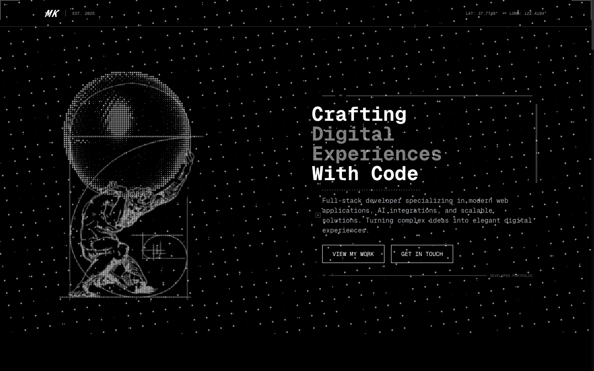

2026 · Shipped · Own site
matuskalis.com
My personal site. Black, monospace, and built around a single dot-matrix rendering of Atlas holding up the world — a figure chosen because it is what the job feels like, and because it survives being drawn entirely out of dots.

Technical chrome as decoration
Everything ornamental on this page is borrowed from instruments rather than from graphic design: coordinates in the top corner, tick marks down the right edge, construction lines overlaying the figure, a small registration square floating in the body copy.
- Monospace for everything. No sans fallback for body copy. It sets an unambiguous register: this is a developer's site.
- The headline steps down in weight. "Crafting" is bright white, "Digital Experiences" grey, "With Code" white again — one sentence given a rhythm without changing size.
- Halftone instead of an image. The Atlas is dot-matrix, so it reads as generated rather than stock, and it costs almost nothing in bandwidth.
- Golden-ratio overlay. The spiral and rectangle over the figure are visible construction, not hidden layout maths.
- Two outlined buttons, equal weight. No colour-filled primary — nothing on the page is trying to convert anyone.
The live site renders my name as "Matus Kalis" — an ASCII spelling that predates this portfolio. It should be Matúš Kališ, and that is a fix queued for the site itself.